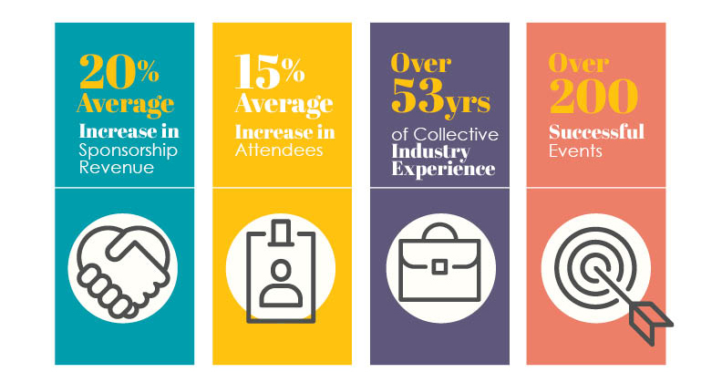

"S-decor" is a full service event management firm based in Paratwada,
Amravati(MH) that was created by pairing together our passion for business and events.
We bring a fresh,
unique approach to the event management industry.
Our team understands that a properly executed event can be leveraged to support an organization’s strategic vision,
incorporated into a company’s marketing plan,
or used to build networks and client loyalty.

S-decor approaches every project with meticulous attention to detail and obsessive precision. Regardless of size and scope, we treat your event like a business with clear strategic goals, defined milestones, and a comprehensive plan to ensure that your event is delivered on time and on budget. At S-decor, we put your organization first. We learn about your business, we focus on your challenges, and we plan events to support your goals.
Our Approach
LEARN: WE WANT TO GET TO KNOW YOU
What is your business about? What are your challenges? What are the issues that your members or clients are dealing with? By thoroughly understanding your company’s leadership culture, how your organization operates and your long term strategic plans, we become a part of your team. Our model works best when we can become more than the “hired help” and can become strategic event management partners, so the first step for us is about getting to know you and your business.
BUILD: LET US DO THE HEAVY LIFTING.
Because we have taken the time to learn about your business and the goals of your event, you can rest assured that the event will be on target and in line with your objectives. Leave the planning and management to us. Let us look after the details and the heavy lifting that comes with planning a professional event. From our network of preferred vendors, industry connections and years of experience, we can deliver a full service event management experience. The Spark team is well equipped to deliver a world class event, each and every time. Your job is to run your business; our job is to run your event.
DELIVER: SIT BACK. RELAX.
Finally, this is where our event management expertise comes into play. At our core, we love events. We love the on-site details, production plans, schedules, deadlines and to do lists that come along with managing an event. From meticulous management of facility details to AV, catering and on-site coordination, we ensure every detail is looked after. Managing your event using a strategic overall plan and a methodical management approach allows you to rest easy. Knowing that every last detail is looked after will allow you to focus on your attendees and stakeholders at the event. Let us look after the rest.